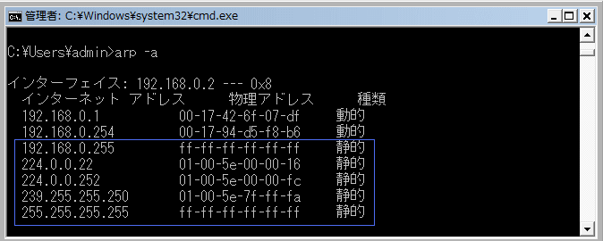
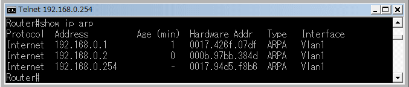
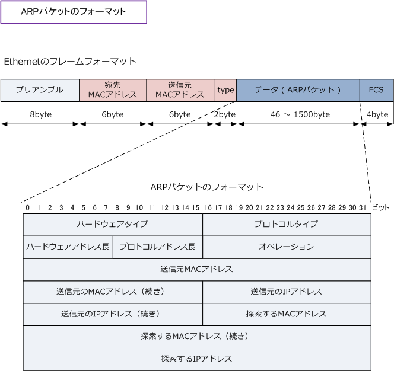

ARP table
ARPキャッシュとARPテーブル
一度、ARPリクエストとARPリプライによりARPの情報がやりとりされるとARPキャッシュとして一定時間 情報が残ります。その場合、ARPリクエストとARPリプライの通信をすることなくLANでの通信が可能です。 ARPのキャッシュ情報は、ARPテーブルというところに保存されていて、PCの場合はコマンドプロンプトで arp -a と入力すればその情報を確認できます。以下の画面はパソコンで arp -a を実行した結果となります。 ※ 動的に得られたARP情報は一定時間の後に消えますが、今すぐ削除したい場合は arp -d で削除できます。

Windows VISTA以降のOSでは、コマンドプロンプトの結果が日本語で表示されるようになります。また、 デフォルトで静的に定義されているARPキャッシュ（青枠部分）が存在します。192.168.0.255については このネットワークのブロードキャストアドレス。224.0.0.22と239.255.255.250アドレスはマルチキャスト アドレス、255.255.255.255はブロードキャストアドレスです。詳細は「ブロードキャストの種類」の通り。
| arp -a の表示結果 | |
|---|---|
| ( インターフェース: 192.168.0.2 --- 0x8 ) | 自分自身のIPアドレス情報 |
| ( インターネット アドレス ) | 通信の宛先となるIPアドレス情報 |
| ( 物理アドレス ) | 通信の宛先となるMACアドレス情報 ( ARPリクエストにより得られた情報 ) |
| ( 種類 ) | ARPが動的に学習された場合は 「 dynamic 」 と表示。 ARPを手動で登録した情報は「 static 」と表示。（保存される情報） |
今度はルータ側のARPテーブルを見てみましょう。Cisco機器でARPテーブルを確認するためには以下のとおり "show ip arp" というコマンドを入力します。Ciscoルータでは自分自身のIPアドレスとMACアドレスの情報も ARPテーブルにのせます。CiscoルータのインターフェースのIPアドレスは192.168.0.254となりますが、自身 の情報はARPのキャッシュ時間の項目（Age)のところに「 - 」が表示されます。このキャッシュは消えません。

なお、Cisco IOS SoftwareのARPエントリのタイムアウトはデフォルト値で240分（4時間）となっています。
ARPパケットのフォーマット
ARPパケットのフォーマットは以下の通りです。これを正確に理解して全ての項目を暗記する必要はなく ARPはIPと同様にOSI参照モデルのネットワーク層で動作するという点、そしてこれはIPパケットではなく ARPパケットである点、そしてこのARPパケットはイーサネットフレームにカプセル化（L2ヘッダの付加） されるという３点を理解して覚えておけば OK です。先に紹介したARPの仕組みは完全に理解しましょう。

| 各フィールド | 英語表記 | ビット数 | 各フィールドの説明 |
|---|---|---|---|
| ハードウェア タイプ |
Hardware Type |
16 bit | ハードウェアの種別情報が入る。イーサネットの場合は「0x0001」。 |
| プロトコル タイプ |
Protocol Type |
16 bit | プロトコルの種別情報が入る。IPの場合は「0x0800」の値。 |
| ハードウェア アドレス長 |
Hardware Length |
8 bit | ハードウェアアドレス（MACアドレス）の長さが入る。固定値で「6」になる。 |
| プロトコル アドレス長 |
Protocol Length |
8 bit | プロトコルアドレス（IPアドレス）の長さが入る。固定値で「4」になる。 |
| オペレーション | Operation | 16 bit | ARPリクエストまたはARPリプライなのかを識別するための情報が入る。 ARPリクエストの場合は「0x0001」、ARPリプライの場合は「0x0002」となる。 |
| 送信元の MACアドレス |
Sender MAC address | 48 bit | 送信元のMACアドレス情報が入る。これは当然ARPのデータとして扱われる。 つまり、通信に必要な「送信元MACアドレス」の情報は「L2ヘッダ」にある。 |
| 送信元の IPアドレス |
Sender IP address | 32 bit | 送信元のIPアドレス情報が入る。これは当然ARPのデータとして扱われる。 つまり、通信に必要な「 送信元IPアドレス 」の情報は「 L3ヘッダ 」にある。 |
| 探索する MACアドレス |
Target MAC address |
48 bit | 宛先のMACアドレス情報が入る。これは当然ARPのデータとして扱われる。 つまり、通信に必要な「 宛先MACアドレス 」の情報は「 L2ヘッダ 」にある。 ARPリクエストの場合は 「 00-00-00-00-00-00 」 の値が入る。 |
| 探索する IPアドレス |
Target IP address |
32 bit | 宛先のIPアドレス情報が入る。これは当然ARPのデータとして扱われる。 つまり、通信に必要な「 送信元IPアドレス 」の情報は「 L3ヘッダ 」にある。 この情報が自分のものであった場合、受信したノードはARPリプライを返す。 |
← ARPとは、RARPとは ICMPとは →